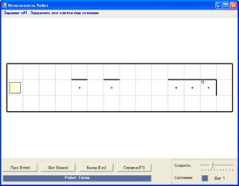
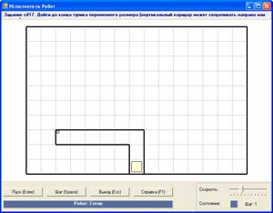
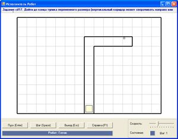
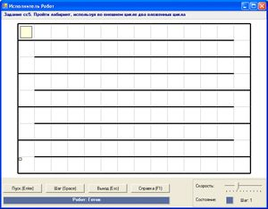

Последовательное выполнение команд в программе определяется структурой следование. Для организации повторяющихся действий в алгоритме используется команда цикла. Команда ветвления позволяет выполнять одну или другую последовательность команд в зависимости от истинности условия.
Следование, цикл и ветвление — базовые алгоритмические конструкции. Используя эти конструкции как элементы некоего «конструктора», можно составлять и разрабатывать любые алгоритмы.
Команды цикла и ветвления управляют порядком выполнения других команд в программе и относятся к командам управления. Использование алгоритмической конструкции следование предполагает отсутствие управляющих конструкций.
Рассмотрим подробнее примеры алгоритмов, содержащих несколько алгоритмических конструкций.
Пример 13.1. Решим задачу cif1 из встроенного задачника.
Робот передвигается вправо до тех пор, пока не встретится стена справа. По пути он должен закрасить те клетки, сверху над которыми есть стена.
Для решения задачи Робот при движении должен проверять каждую клетку на своем пути. Если условие «сверху стена» выполняется, то Робот закрашивает эту клетку. После проверки клетки Робот сдвигается вправо. Такие действия выполняются в цикле, пока справа пусто.
После цикла необходима команда ветвления, так как для крайней клетки поля команда «справа пусто» уже не выполняется и клетка в цикле не закрашивается.
В этой задаче внутри структуры цикла используется структура ветвления.
Пример 13.2. Решим задачу cif17 из встроенного задачника.
Робот должен дойти до конца «коридора» переменного размера. «Коридор» может сворачивать влево или вправо.
Для решения задачи Робот сначала перемещается вверх до тех пор, пока вверху пусто.
Стена, появившаяся сверху, означает, что начался поворот «коридора». «Коридор» поворачивает влево, если слева пусто, иначе «коридор» поворачивает вправо. Дальше Робот двигается в том направлении, где пусто, пока не встретит стену.
При решении данной задачи последовательно используются сначала структура цикла, а затем структура ветвления. Каждая последовательность команд в структуре ветвления, в свою очередь, является циклом.
Операторные скобки begin и end; опущены, поскольку последовательность состоит из одной команды цикла.
Пример 13.3*. Решим задачу cc5 из встроенного задачника.
Робот находится в верхнем левом углу поля и должен переместиться в нижний левый угол. На поле присутствуют стены, которые Робот должен обойти. При этом он должен сначала двигаться до правой границы поля, затем спуститься вниз, а потом двигаться до левой границы поля и спуститься вниз. Эти действия Робот должен повторить 4 раза.
При решении данной задачи внутри цикла с параметром используются два других цикла с предусловием.
Структуру, когда внутри одного цикла выполняется другой, называют вложенными циклами.
Как видно из примеров, базовые алгоритмические структуры можно комбинировать друг с другом так, как этого требует алгоритм решения поставленной задачи.
|
Перед человеком постоянно возникают разнообразные задачи, для которых существуют различные алгоритмы решения. При всем многообразии алгоритмов для их записи достаточно трех алгоритмических конструкций (структур): следование, цикл, ветвление. Это положение было выдвинуто в середине 70-х гг. ХХ в. нидерландским ученым Эдсгером Вибе Дейкстрой (1930—2002). Его труды оказали влияние на развитие информатики и информационных технологий. Э. Дейкстра является одним из разработчиков концепции структурного программирования, участвовал в создании языка программирования Алгол. Известен своими достижениями в области математической логики и теории графов. |
|
Пример 13.1. Одна из возможных начальных обстановок:  Программа для исполнителя Робот:
Пример 13.2. Одна из возможных начальных обстановок:  Другая обстановка:  Программа для исполнителя Робот:
Пример 13.3 * . Начальная обстановка:  Программа для исполнителя Робот:
|

1 Назовите базовые алгоритмические структуры
2 Что такое вложенный цикл?